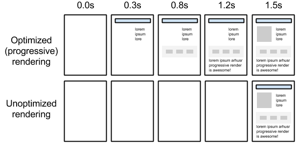

С чего начинается HTML
доктайп
Каждый HTML-документ должен начинаться с декларации типа документа или «доктайпа».
Тип документа нужен, чтобы
браузер мог определить версию HTML и правильно отобразить страницу
Например, для старой версии HTML 4.01 доктайп выглядит так:
!DOCTYPE HTML PUBLIC "-//W3C//DTD HTML 4.01//EN" "http://www.w3.org/TR/html4/strict.dtd"
А для последней версии HTML уже намного проще:
!DOCTYPE html
Тег DOCTYPE, указанный в примере, - - самый простой способ обеспечить стандартный режим отображения;
использование
этого тега рекомендовано стандартом HTML5. Для предыдущих версий HTML рекомендованы другие варианты, но
все
существующие на текущий момент браузеры используют такой тег DOCTYPE для отображения страницы в
стандартном
режиме, даже Internet Explorer 6. На сегодняшний день не существует веских причин для использования более
сложного
тега DOCTYPE. Использование какого-либо другого тега DOCTYPE может привести к переключению браузера в
частично
стандартный режим отображения или в режим совместимости
Отличия XHTML от HTML
XHTML имеет одинаковый с HTML набор тэгов.
XHTML отличается от HTML более строгим синтаксисом.
progressive rendering
суть
Наверное, вы сталкивались хотя бы раз в жизни с JPEG-картинкой, которая сперва
загружается с сервера мутной,
а по мере загрузки остального содержимого становится чётче. Такой формат картинки называется "Progressive
JPEG",
и его основная идея – показать как можно скорее пользователю хоть какое-то содержимое, пусть и не до
конца
готовое. Пользователь с первой секунды уже будет знать размер картинки и ее примерное содержимое, а в
дальнейшем
содержимое будет становится только отчётливее

HTML-атрибуты data-*
Можно присобачить к любому тегу и старые браузеры ничего не скажут против.
Можно в названии писать словосочетания: data-email-id=”190”.
Можно использовать любую строку в значении.
Можно использовать любой количество таких параметров для одного тега.
Data-атрибут в настоящий момент не несет для вас никакой ценности. Его единственной задачей является
добавление
к элементу данных, которые валидатор HTML-разметки не признает ошибочными.
Он нужен для создания динамических страниц при использовании встроенного в браузер языка
программирования JavaScript
difference between a cookies, sessionStorage and localStorage
cookies
Cookie - это небольшая порция текстовой информации, которую сервер передает браузеру.
Браузер будет хранить эту
информацию и передавать ее серверу с каждым запросом как часть HTTP заголовка. Одни значения cookie могут
храниться
только в течение одной сессии, они удаляются после закрытия броузера. Другие, установленные на некоторый
период
времени, записываются в файл. Обычно этот файл называется 'cookies.txt' и лежит в рабочей директории
установленного
на компьютер браузера.
Cookies это данные сохраненные на сервере
sessionStorage and localStorage
Авторам при реализации некоторого функционала на веб-сайте иногда приходится
сохранять данные на устройстве пользователя
для того, чтобы потом к ним можно было обратиться. Реализовать эту возможность позволяют объекты API
HTML5
sessionStorage и localStorage.
Отличаются эти объекты друг от друга только тем, что имеют различный период времени хранения данных,
помещённых
в них. Объект sessionStorage хранит данные ограниченное время, они удаляются сразу после того как
пользователь
завершает свой сеанс или закрывает браузер. Объект localStorage в отличие от объекта sessionStorage
хранит
данные неограниченное время.
difference between ‹script›, ‹script async› and ‹script
defer›
‹script›
Тег ‹script› предназначен для описания скриптов, может содержать ссылку
на программу или ее текст
на определенном языке. Скрипты могут располагаться во внешнем файле и связываться с любым
HTML-документом.
Такой подход позволяет использовать одни и те же общие функции на многих веб-страницах и ускоряет их
загрузку,
т.к. внешний файл кэшируется при первой загрузке, и скрипт вызывается быстрее при последующих вызовах
‹script› может располагаться в заголовке или теле HTML-документа в неограниченном
количестве.
В большинстве случаев местоположение скрипта никак не сказывается на работу программы. Однако скрипты,
которые
должны выполняться в первую очередь, обычно помещают в заголовок документа
‹script async›
При наличии атрибута async браузер при возможности запускает скрипт асинхронно. Это
означает, что указанный в
атрибуте src файл будет выполняться без ожидания загрузки и отображения веб-страницы. В то же время и
страница
не ожидает результата выполнения скрипта, а продолжает загружаться как обычно
‹script defer›
Атрибут defer откладывает выполнение скрипта до тех пор, пока вся страница не будет
загружена полностью
POST и GET
post
Если же форма будет отправляться методом POST, адрес полученной страницы будет всегда
один, какие бы данные не
вводились. Объем передаваемой информации у этих методов тоже различен. С помощью GET лучше отправить
небольшие
тестовые данные. Максимальный объем здесь 4 Кб. Для POST такого явного ограничения нет. Максимальный
размер
для него задается настройками сервера. Поэтому он подходит для загрузки файлов на сервер и передачи
больших
объемов текста.
get
Если, в поля два текстовых поля формы ввести значения 15 и 20, то при выполнении
GET-запроса, в адресной строке
браузера будет явно виден url (адрес) страницы. GET стоит использовать тогда, когда его результат можно
полезно
использовать для получения необходимой страницы повторно. Например, с параметрами необходимой сортировки
или
выборкой. Строку GET запроса можно увидеть в любом интернет поисковике.
элементы
Элементы HTML страницы обычно делятся на блочные и строчные
блочные
Блочные элементы можно представлять как прямоугольные области на странице. Они имеют
следующие особенности:
До и после блочного элемента существует перенос строки. Блочным элементам можно задавать ширину,
высоту, внутренние
и внешние отступы. Занимают всё доступное пространство по горизонтали. К блочным элементам относятся
такие
теги как: ‹p›, ‹h1›, ‹h2›, ‹ul› и так далее.
строчные
Располагаются друг за другом в одной строке, при необходимости строка переносится.
Особенности:
До и после строчного элемента отсутствуют переносы строки. Ширина и высота строчного элемента
зависит только
от его содержания, задать размеры с помощью CSS нельзя. Можно задавать только горизонтальные отступы.
Строчные
элементы реагируют только на горизонтальные отступы. К строчным элементам относятся такие теги как:
‹a›,
‹strong›, ‹em›, ‹span› и так далее.
Еще раз акцентируем внимание на особенности поведения строчных элементов в блочной модели:
- Не реагируют на CSS-свойства width и height
- Частично реагируют на margin, воспринимая только горизонтальные отступы
- Частично реагируют на padding, воспринимая только горизонтальные отступы
- При задании вертикальных padding визуально увеличиваются, но без увеличения
занимаемого места (не отталкивают
другие элементы)
- Воспринимают рамки. Аналогично padding рамки сверху и снизу не увеличивают
занимаемое элементом место.
отступы
Вертикальный отступ между двумя соседними элементами равен максимальному отступу
между ними. Если отступ одного
элемента равен 20px, а второго 40px, то отступ между ними будет 40px.
Этот эффект называется эффектом «схлопывания» внешних отступов или «схлопывания» маргинов.
Горизонтальные отступы между элементами просто складываются. Например, горизонтальный отступ между
двумя элементами
с отступами 30px будет равен 60px.
«Выпадание» — это еще один эффект, связанный с вертикальными внешними
отступами. Если внутри родительского блока
расположить блок и задать ему отступ сверху, то внутренний блок прижмется к верхнему краю родительского,
а
у родительского элемента появится отступ сверху. Т.е. верхний отступ внутреннего элемента «выпадает» из
родительского
элемента.
Если у родительского элемента тоже был задан внешний отступ, то выберется максимальный отступ между
собственным
и «выпавшим» .
Чтобы избавиться от эффекта выпадания, можно задать родительскому элементу внутренний отступ
(паддинг) сверху
или добавить рамку сверху.
Внешние и внутренние отступы всегда складываются.
ширина
CSS-свойство width задаёт не общую ширину блока, а только ширину содержания. Общая
ширина блока затем складывается
из трёх компонентов: ширины содержания, внутренних отступов и ширины рамок слева и справа.
Поведение элемента может зависеть от того, как именно вы зададите его ширину.
Первый вариант. Вариант по умолчанию, когда ширина не задается, соответствует значению width:auto;. В
этом случае блок занимает
всю ширину родительского блока. Если у блока есть внутренние отступы или рамки, то его ширина содержания
автоматически
уменьшается, а общая ширина остается равной ширине родителя.
Второй вариант. Когда ширина блока задана явно, например, width:100%;. В этом случае
ширина содержания блока
равна ширине родительского блока. Если блоку добавить внутренние отступы и рамки, то его общая ширина
становится
больше ширины родителя.
псевдоэлементы
::before, ::after
Применяется для отображения желаемого контента до содержимого элемента, к которому он
добавляется. Работает совместно
со свойством content
::first-letter
Определяет стиль первого символа в тексте элемента, к которому добавляется. К этому
псевдоэлементу могут применяться
только стилевые свойства, связанные со свойствами шрифта, полями, отступами, границами, цветом и фоном
::first-line
Задает стиль первой строки форматированного текста. Длина этой строки зависит от
многих факторов, таких как используемый
шрифт, размер окна браузера, ширина блока, языка и т.д. В правилах стиля допустимо использовать только
свойства,
относящиеся к шрифту, изменению цвета текста и фона
::selection
Псевдоэлемент ::selection применяет стиль к выделенному пользователем тексту. В
правилах стилей допускается использовать
следующие свойства: color, background и background-color
вьюпорт
что это
Вьюпорт — видимая область страницы в браузере, окно браузера включая полосу
прокрутки.
vw — 1% от ширины области просмотра
vh — 1% от высоты области просмотра
vmin — 1% от меньшего значения из ширины и высоты области просмотра
vmax — Определяется, что больше, значение ширины или высоты области просмотра и от него
вычисляется 1%
API
Что такое API
API (Application Programming Interface) — это интерфейс программирования, интерфейс
создания приложений. Если говорить
более понятным языком, то API — это готовый код для упрощения жизни программисту.
difference between progressive enhancement and graceful degradation
graceful degradation
Graceful degradation может выражаться в возможности работы при отключенном
JavaScript, в достаточно аккуратном
отображении интерфейса в браузере, не поддерживающем новые свойства CSS3, в адекватном отображении сайта
при
отключенных изображениях. В каждом из этих случаев работа пользователя с интерфейсом будет в принципе
возможна,
хотя и не так удобна
progressive enhancement
Что же такое progressive enhancement? Чаще всего этот термин переводят, как
прогрессивное улучшение. Прогрессивное
улучшение предполагает, что веб-интерфейсы должны создаваться поэтапно, циклически, от простого к
сложному.
На каждом из этапов должен получаться законченный веб-интерфейс, который будет лучше, красивее и удобнее
предыдущего.
Таких этапов три:
- «Старый-добрый-HTML» этап
- CSS этап
- JavaScript этап